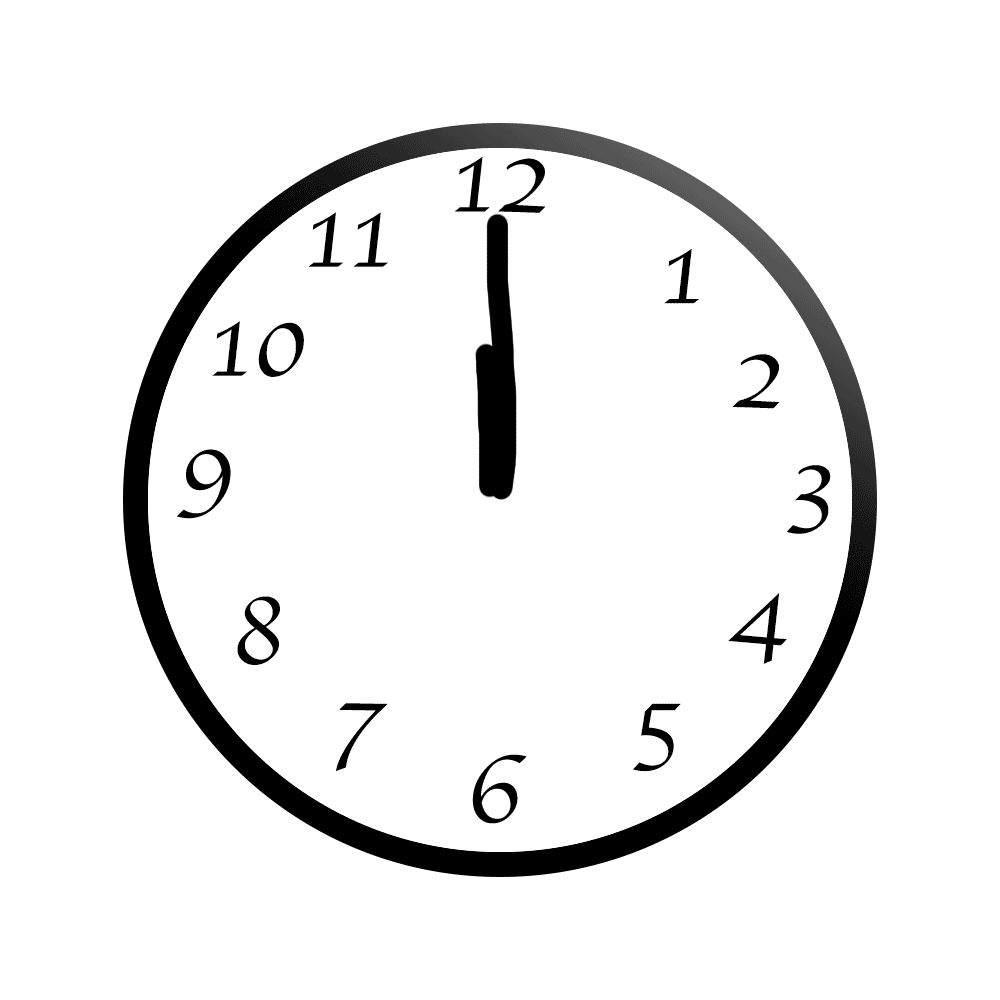

A Day in the Life of a College Student
Every (1 Time Span) ,
I wake up and get off my (2 Noun).
I don't always have time to(3 Verb) a shower,
but I always make sure to (4 Verb) my hair.
Once that's done I get some (5 Noun Plural or Singular),
and then it's off to my first (6 Class).
I often get caught (7 Verb ending in 'ing') in class.
No one likes it when the (8 Occupation) gives a surprise (9 Noun).
My second class is (10 Noun) Theory.
Dr. (11 Famous Person) is incredibly (12 Adjective),
but I never (13 Verb) her because of her thick (14 Noun). Her (15 Noun Plural), however, are really (16 Adjective).
After lunch, I have no more (17 Noun Plural) and I`m free to (18 Verb)(19 Preposition) my friends. Before I go to bed I (20 Verb) a little bit.
(21 Adjective) (22 Noun) (23 Verb) (24 Adjective).